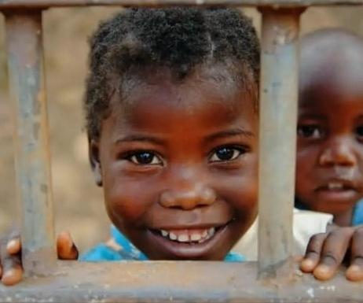

Not all work performed by children is child labour. Child labour is defined by international
standards as work that is hazardous, demands too many hours, or is performed by children who are too young.
Children work because their survival depends on it, because adults take advantage of their vulnerability,
and because national education systems are weak. Child labour is sometimes the result of ingrained customs
and traditions.
How and why it happens?
Even well-intended customs and traditions can be harmful, such as:
The view that work is good for children because it helps them build character and develop skills
The tradition that children should follow their parents' footsteps and learn their trade at an early age
The importance of traditions that push poor families into debt, such as social occasions or religious
events, which are paid off through child labour
Schooling is another important factor. Many communities do not have enough schools, or do not view education
as a good alternative to work. Sometimes, children seek work themselves, because their families are
financially strained. Economic hardship can lead to family dysfunction and ultimately, child labour. Ending
child labour is a complex process, but it is within reach.
The key components are strictly-enforced legislation , followed by incremental societal changes
International concern is growing driven by :
Globalized markets
Economical transparency
Consumer awareness
What does child labour look like?
Globally, 152 million children aged 5 to 17 are in child labour. About half of them (72.5 million) perform
hazardous work that places their health, safety or moral development at risk.
One in five children in Africa is involved in child labour, making it the region where the risk of child
labour is greatest
Half of affected children live in lower middle and upper-middle income countries
The problem is more prevalent in countries experiencing conflict and disaster
Some children in child labour work 43-hour weeks. Estimates for boys involved in child labour are higher than
those for girls, but those estimates don't include household chores.
70% of children in child labour work in agriculture, mainly in subsistence and commercial farming and
herding livestock
A third of children in child labour are completely outside the education system, and those that do attend
perform poorly

Preventive Measures of Child Labour
With the right policy approaches and practical responses, the end is in sight. Here's what we need to do:
Advance the legal commitment to ending child labour
Promote decent work for adults and young people of legal working age
Build and extend social protection systems, including floors, to help poor families
Expand access to free, quality public education as the logical alternative to child labour
Address child labour in supply chains
Protect children in situations of fragility and crisis